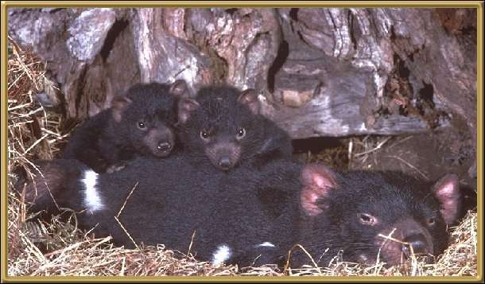

The Devil was very popularised by the Bugs Bunny cartoons, however that has not prevented it from becoming an endangered species. Once found throughout most of Australia, it is now limited to the southwestern districts of Tasmania. It has an eerie growl that starts as a type of whistle. They have very powerful jaws and tend to eat anything that attacks them, leaving virtually nothing behind. They have a life expectancy of about seven years in the wild. They are known as ferocious animals and have very bad tempers! They grow to about 60cm (2 feet).
Photographer: Unknown